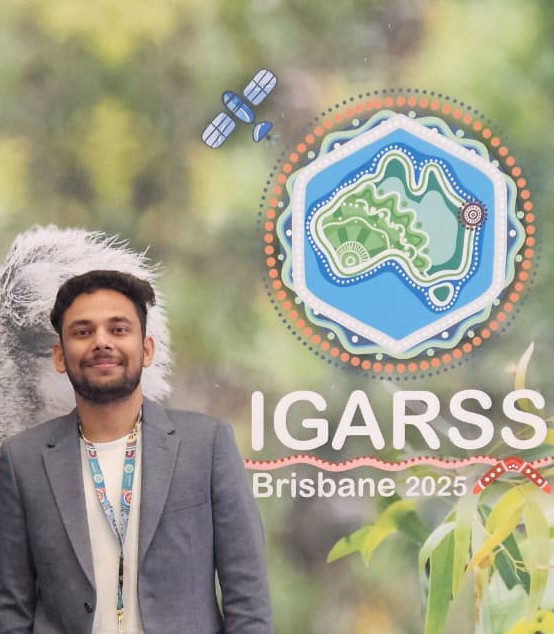

DR.Vaibhav Tyagi
Radar meteorologist
I study high-impact weather through atmospheric observations, remote sensing and data-driven methods, bringing together weather radar, satellites, numerical weather prediction and AI to bridge fundamental science and operational meteorology.
- OfficeDept. of Atmospheric & Oceanic Sciences, McGill University
Burnside Hall, 805 Sherbrooke St. West, Montréal, QC H3A 0B9, Canada - Emailvaibhavtyagi7191@gmail.com (personal)
vaibhav.tyagi@mcgill.ca (office) - ScholarGoogle Scholar profile ↗

VTConnected Weather Group
Department of Atmospheric & Oceanic Sciences, McGill University, Canada
Research vision
Advancing the science of high-impact weather
My long-term objective is to advance the understanding and prediction of high-impact weather through atmospheric observations, remote sensing and data-driven approaches.
By integrating weather radar, satellite observations, numerical weather prediction and artificial intelligence, my research aims to bridge the gap between fundamental science and operational meteorology.
Studied & worked at
Research themes
Latest observations
Recent papers
Recognition
Highlights
Open to collaboration
Let's work on the next storm together
Interested in radar meteorology, remote sensing or AI for weather? I'm always happy to talk.
Get in touch →